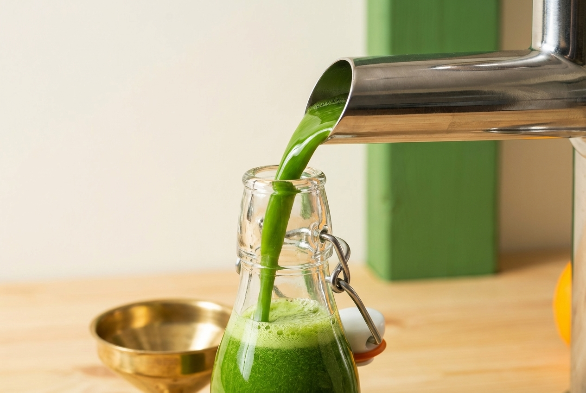
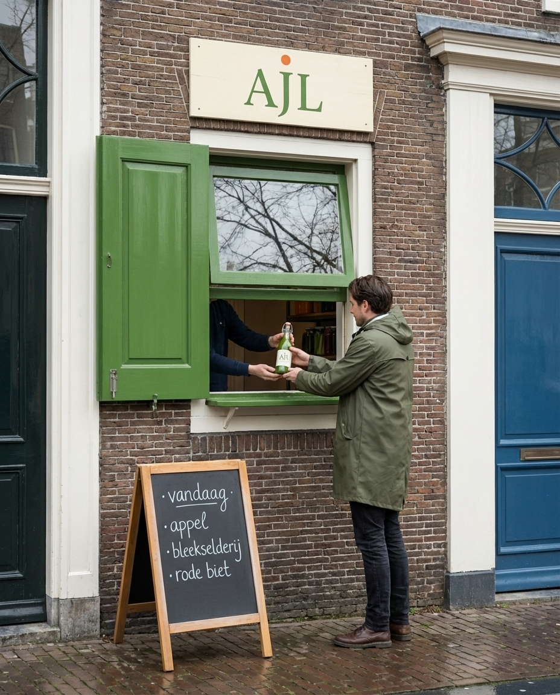
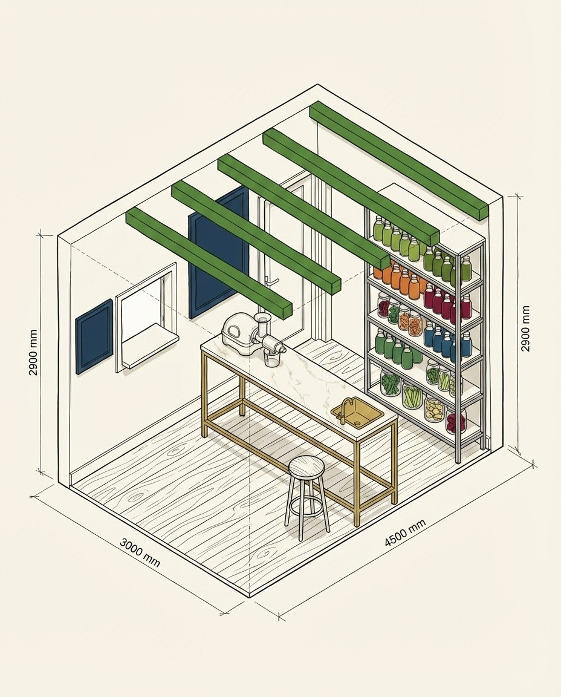
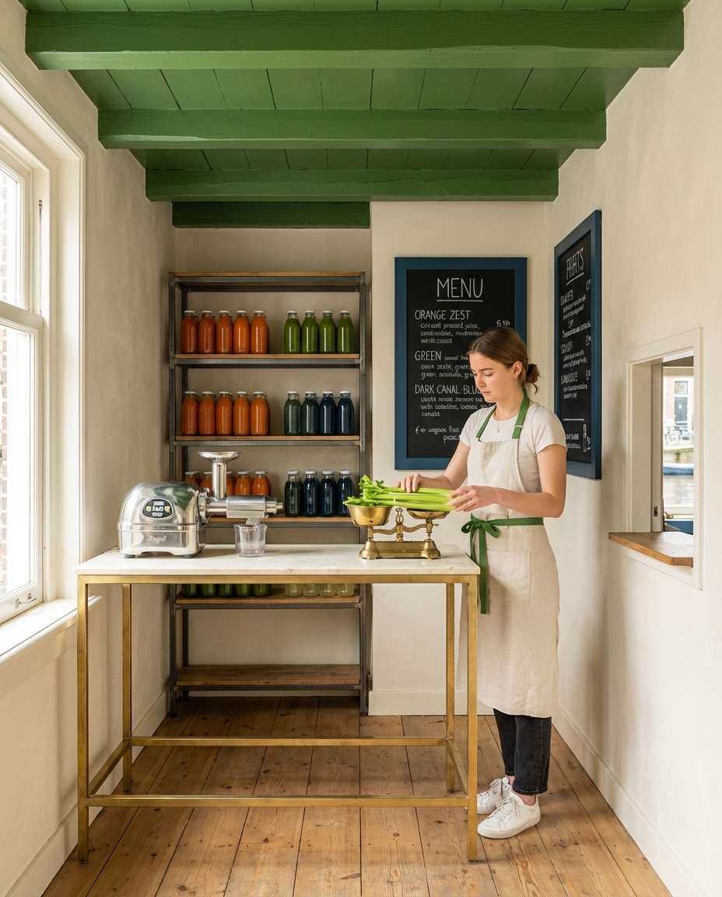
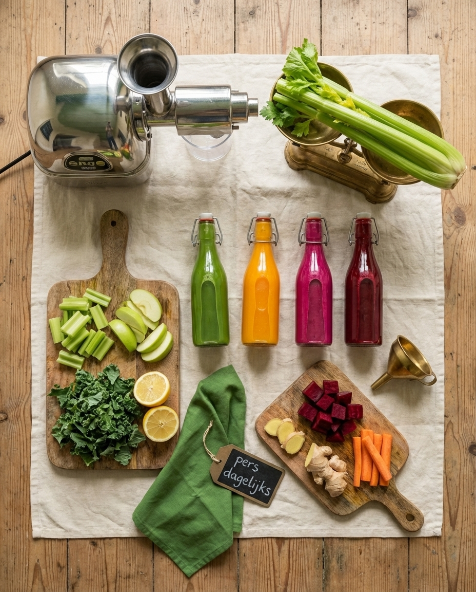
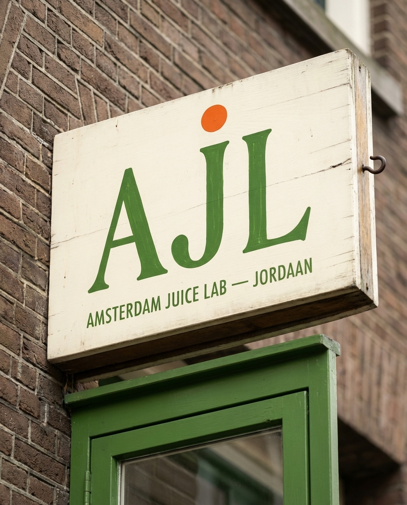
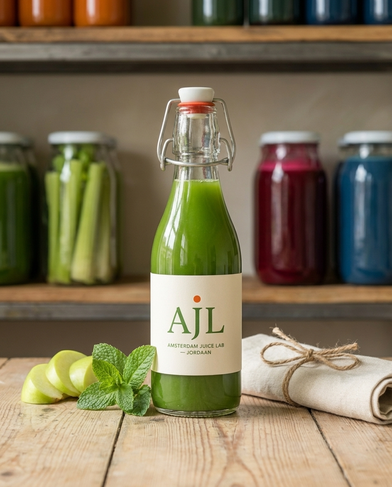
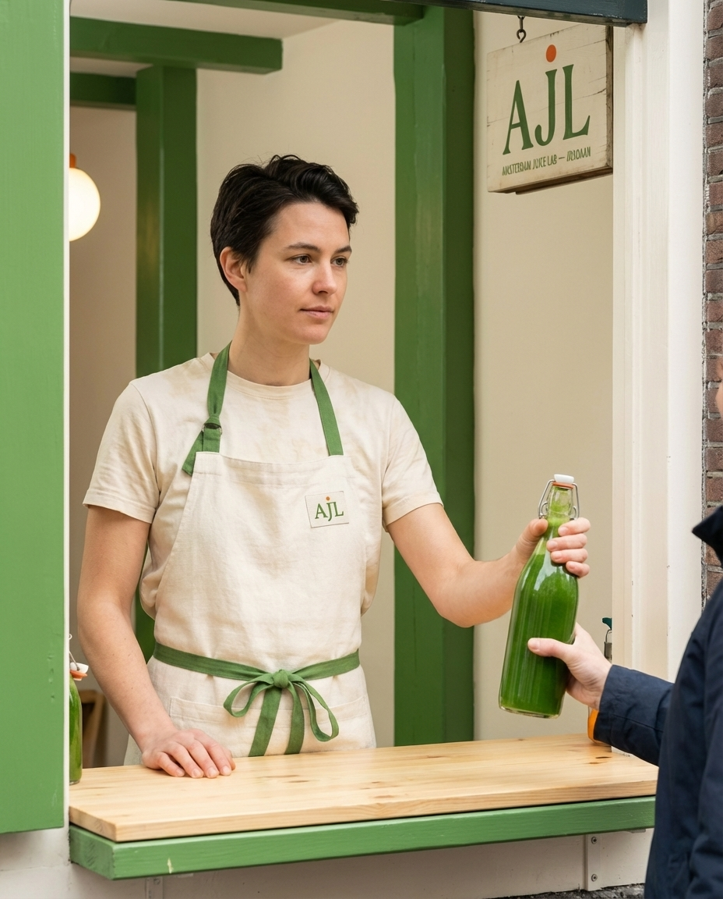

Amsterdam Juice Lab is a 12 m² cold-press juice kiosk on a Jordaan canal corner — eight bottles, one glass-walled hydraulic press, open 08:00–18:00. Total investment €9,800, launch in 6 weeks, break-even at 78 bottles per day.
Amsterdam has two kinds of juice: €2 sugar-spiked supermarket cartons and €9 plastic-cupped tourist smoothies. Nothing in between — a proper hydraulic cold-press in a glass bottle, same day, €6.
AJL fills that gap with eight disciplined recipes, a Goodnature M-1 single-auger press visible through the window, and a €9,800 kiosk that pays back in Month 4 without a single Deliveroo order.

Every morning at 6am, the day's fruit is pressed on-site. Bottles are numbered, dated, and sold within 12 hours. Whatever's left at 18:00 goes to the staff room or the compost — never to tomorrow. No HPP, no thermal, no preservatives.
Role: UX designer at a Jordaan agency, cycles to work
Lifestyle: Pilates three mornings, reads The Correspondent, avoids plastic
Why she buys: Real cold-press, glass bottle, walking distance, recurring subscription
Price tolerance: €5–8 per bottle
Visit frequency: 4×/week
Role: Cardiologist at OLVG, half-marathon runner
Lifestyle: Weekend family brunch at home with four bottles
Why he buys: Low sugar, high vitamin C, traceable farms, takeaway 4-pack
Price tolerance: €6–9 per bottle
Visit frequency: 1×/week (bulk)
Returning tourists (25% of volume, mostly UK/DE/US who found us through Google Maps on a second visit), Jordaan yoga studios on a wholesale line, and hotel concierges at Pulitzer and Andaz with a house-account tab.
Five defensible advantages over the supermarket cartons and the tourist smoothie bars.

Master visual system · logo plate, bottle with canal label, recipe count block, zest accent
Leaf leads. Cream is the paper. Canal blue grounds the label. Zest is the only accent. Ink is for type. Do not introduce a sixth.
| Leaf | Shopfront, awning, bottle caps, brand mark, hatch field |
| Cream | Paper stock, walls, napkins, bottle labels |
| Canal | Label stripe, chalkboard frame, apron straps |
| Zest | CTA, price chip, recipe number, accent only — never field |
| Ink | Body type, fine lines, date stamps |
One display serif with variable optical sizing, one humanist sans for body. Both free, both Google Fonts, both load in under 70 KB combined.
| Use | Font | Weight | Size |
|---|---|---|---|
| Wordmark | Fraunces | 800 | 48pt+ |
| Page titles | Fraunces | 800 | 30pt |
| Section titles | Fraunces | 600 | 20pt |
| Bottle labels | Inter | 700 | 16pt |
| Body copy | Inter | 400 | 11pt |
| Captions / small | Inter | 500 | 9pt |
One monogram, one stamp, zero decorative pattern. The Jordaan rule: if you can avoid a pattern, avoid it. Cream wall + leaf awning + glass bottle = pattern enough. The only repeating mark allowed is the circular batch stamp.
Monogram is used at 25 mm on bottle caps, 60 mm on awnings, and 300 mm on the hatch window. Never stretched, never rotated, never placed on a photograph.
AJL hatch · Jordaan canal-house, 3.2 m wide, het luikje opens at 07:30
3.0 m wide, 4.5 m deep. Press wall on the left visible through a glazed panel. Hatch counter on the canal side. Cold room at the back. No seating — takeaway only.

Axonometric · 3000 × 4500 × 2900 mm · hatch · press · shelf · sink
Everything in mm. These specs go verbatim to the Amsterdam joinery (Houtatelier Noord, Zaandam).
| Element | W × D × H (mm) | Material | Finish | Notes |
|---|---|---|---|---|
| Hatch counter | 2800 × 450 × 1050 | Solid oak 30 mm | Matte food-safe oil | Fold-down awning edge |
| Press plinth | 700 × 700 × 900 | Stainless 304 | Brushed | Goodnature M-1 base |
| Glass press panel | 1800 × 10 × 1200 | Tempered glass | Clear | Customer-facing viewing wall |
| Bottle fridge | 600 × 600 × 1200 | Stainless + glass door | Brushed | Porkka SF 627 or equiv. |
| Wash sink | 900 × 600 × 900 | Stainless 304 | Brushed | Double basin, fruit wash |
| Chalkboard menu | 800 × 500 × 20 | Slate on oak frame | Canal-stained frame | Hand-lettered daily |
| Awning | 3000 × 900 × 600 | Marine canvas on steel | Leaf-green | Hand-cranked retract |
Power: 16 A 230 V single-phase (press 1 100 W, fridge 220 W, wash booster 1 800 W, POS 30 W, lighting 60 W). Water: 1/2" inlet, 50 mm drain. Assembly: 2 days by 2-person crew.
Dutch canal light is grey and flat. The hatch should feel like a lab, not a café. Two cream pendants over the hatch, a glass shelf strip behind the bottles, no spots, no dimmers, no RGB.
| Fixture | Qty | Lumens | CCT (K) | Placement |
|---|---|---|---|---|
| Cream enamel pendant | 2 | 600 | 3000 | Over hatch counter, 1800 mm AFF |
| LED strip, cream diffuser | 1×1.8 m | 900/m | 3500 | Under bottle shelf |
| Surface downlight | 2 | 500 | 4000 | Prep zone, ceiling |
| Exterior bulkhead | 1 | 400 | 2700 | Awning underside |
Total lumens: ~4,200. CRI: 90+. Driver: Meanwell HLG series, 5-year warranty. Do not: install RGB, install spotlights, install dimmers.

Six pieces of non-negotiable equipment. If you skimp on any of these, the concept fails.
| Item | Model | € | Supplier |
|---|---|---|---|
| Cold-press juicer | Goodnature M-1 | 2,800 | Goodnature BV (Amsterdam) |
| Bottle fridge | Porkka SF 627 | 1,100 | Porkka Nederland |
| Double-basin wash sink | Stainless 900 | 420 | Horecatraders |
| Fruit crates + cold room | 6× Euronorm + 6 m³ | 680 | Koelcel Direct |
| Bottle-capper + labeller | Neostarpack semi-auto | 540 | Horeca Online NL |
| POS + card terminal | SumUp Solo + Air | 120 | SumUp NL |
| Core equipment subtotal | 5,660 | € | |

| Item | Detail | € |
|---|---|---|
| Glass bottles (500×) | 250 ml amber flint, crown cap | 380 |
| Crown caps + shrink seals | 10k caps, leaf-printed | 120 |
| Canal-label paper | Matte kraft, 100 g/m², batch stamp block | 160 |
| Wooden crates (×6) | For return deposit system | 180 |
| Stainless prep bowls | 6× Ø 400, 2× Ø 600 | 110 |
| Knives + peelers | Victorinox chef set | 95 |
| Thermometer + pH strips | HACCP compliance | 60 |
| First-aid + cleaning | Full HACCP kit | 140 |
| Apron + uniform (×4) | Leaf canvas + cream tee | 200 |
| Details subtotal | 1,445 | |
Waste control: fruit pulp goes to De Ceuvel farm (free pickup 2×/week). Bottle return €0.50/ea, 92% return rate at month 3.
Jordaan UNESCO rules forbid backlit signs on pre-1900 facades. Hand-painted leaf-green canvas awning is the primary mark. A slate board next to the hatch carries the day's eight recipes.

One SKU family: 250 ml amber flint glass, crown cap, canal-label kraft paper, dated stamp. Zero plastic in the kiosk. Returned bottles are washed in the cold room and back on the shelf in under 45 minutes.
| Component | Spec | Supplier |
|---|---|---|
| Bottle | 250 ml amber flint, crown finish 26 mm | O-I Nederland |
| Cap | Leaf-printed crown, 26 mm | Pelliconi NL |
| Label | Kraft 100 g/m², 80×60 mm wrap | Drukkerij De Jordaan |
| Stamp | Rubber date stamp + permanent ink | Stempelfabriek |
| 4-pack crate | Beech wood, leaf-branded | Houtatelier Noord |
| Carry bag | Unbleached cotton, AJL stamp | Tassenfabriek Utrecht |

Deposit system: €0.50 per bottle, refunded in cash or recipe credit. Break-even return rate at month 3 is 92%. Target: zero single-use plastic on premises.
Staff wears a cream organic-cotton tee with the AJL batch stamp and a leaf-green canvas apron, canal-navy straps. No logos larger than 40 mm. No hats. Non-slip kitchen shoes.
| Item | Fabric | Detail |
|---|---|---|
| Tee (×3 per staff) | Organic cotton 180 g/m², cream | AJL batch stamp on chest, 35 mm |
| Apron | Canvas 350 g/m², leaf-green | Canal-navy straps, brass hardware |
| Beanie (winter) | Wool, canal-navy | AJL stitched 25 mm |
| Shoes | Birkenstock Professional | Staff provides, AJL reimburses €80 |
| Gloves | Nitrile black | Pressing + washing only |

Laundry: twice-weekly pickup by Schoon Jordaan (€32/week). Replacement: aprons every 6 months, tees every 3 months, reimbursed from staff budget.
Rotating never. Substitutions never. If a fruit is not in season, the recipe is off the board for that week — we do not fake it with frozen pulp.
| № | Name | Composition | € |
|---|---|---|---|
| 01 | Green Storm | Kale · cucumber · green apple · lemon · ginger | 7.00 |
| 02 | Carrot Sun | Carrot · orange · turmeric · lemon | 6.00 |
| 03 | Beet Riot | Red beet · apple · lemon · ginger | 6.50 |
| 04 | Ginger Deep | Ginger · apple · lemon · cayenne | 5.50 |
| 05 | Citrus 6 | Orange · grapefruit · lemon · lime · mandarin · yuzu | 7.50 |
| 06 | Apple Fix | Jonagold · pear · lemon | 5.00 |
| 07 | C + D | Orange · carrot · ginger · turmeric · black pepper | 6.50 |
| 08 | Canal Blue | Blueberry · blackcurrant · apple · lemon · mint | 8.00 |
Gross margin: 72% average. Average ticket: €6.45. Best sellers M1-3: 01 Green Storm, 05 Citrus 6, 08 Canal Blue.
Reserve: €200 emergency buffer held in Bunq business account. First 8 weeks of rent are prepaid so the kiosk survives a slow opening.
Netherlands food kiosk setup is methodical but not slow. The whole stack can be finished inside 3 weeks if you start KvK and NVWA in parallel.
Target month 6 onward. Break-even at 78 bottles/day, hit consistently from month 4.
| Line | Detail | € / month |
|---|---|---|
| Revenue · hatch | 110 bottles/day × €6.45 × 26 days | +9,600 |
| Revenue · wholesale | Yoga studios + hotels 4-pack | +1,200 |
| Total revenue | +10,800 | |
| COGS · fruit | Kwakernaak + Mastrototaro | −2,750 |
| COGS · bottles/labels/caps | Glass + print + deposit float | −480 |
| Rent | 12 m² Jordaan canal corner | −650 |
| Utilities | Electricity + water + internet | −210 |
| Staff | 1 FTE owner + 1 PT weekend | −2,800 |
| Insurance + KvK + pension | Centraal Beheer + Horeca pens. | −240 |
| Waste + cleaning + laundry | Schoon Jordaan + De Ceuvel | −200 |
| Marketing + software | Instagram ads + POS + accounting | −180 |
| BTW + inkomstenbelasting | 9% BTW + provisional tax | −870 |
| EBITDA | +2,420 |
Payback period on €9,800 investment: Month 5–6. Year 1 net: ~€18,000 after founder draw.
Named suppliers beat generic wholesale. Amsterdam has a dense farm-to-Jordaan network — use it.
| Category | Supplier | City | Why them |
|---|---|---|---|
| Apples + pears | Fruitbedrijf Kwakernaak | Randwijk | Organic, 60 km, twice-weekly delivery |
| Citrus | Mastrototaro Sicilia (via Amsterdam Fruit) | Amsterdam | Direct Sicilian import, ungassed |
| Ginger + turmeric | De Groote Voort | Lelystad | Biodynamic root growers |
| Leafy greens | Kwekerij Osdorp | Amsterdam-West | 12 km distance, same-day cut |
| Berries | Peeters Fruit | Limburg | Frozen line for winter 08 recipe |
| Cold-press machine | Goodnature BV | Amsterdam | Local service + commissioning |
| Bottles | O-I Nederland | Leerdam | 250 ml amber flint, crown finish |
| Caps | Pelliconi NL | Rotterdam | Custom leaf-print crown |
| Labels + print | Drukkerij De Jordaan | Amsterdam | Walking distance, kraft specialist |
| Joinery | Houtatelier Noord | Zaandam | Oak + canal-friendly hardware |
| Awning | Zaanse Canvas | Zaandam | UNESCO-approved marine canvas |
| Banking + payroll | Bunq + Employes | Amsterdam | API-first NL fintech |
| Accountant | Boekhouder De Jordaan | Amsterdam | Horeca specialist, €180/month |